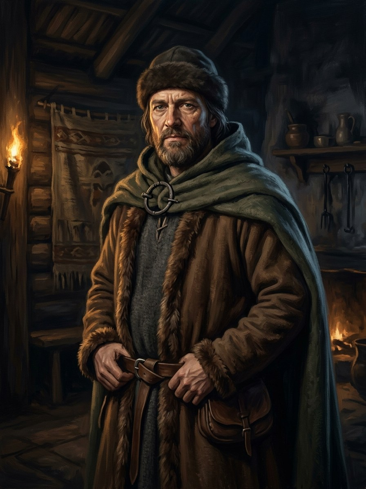

Krivis of Šventaragis¶
Summary¶
The Krivis of Šventaragis (Krivių Krivaitis), high priest of the Šventaragis valley at Vilnius, keeper of the eternal flame and of the Silent Pact. He is a the saga’s invention built on a debated historical office: the saga names him Sirvydas, a name he gave to the fire the day he inherited the crooked staff (the krivulė) and has not used since (Book VI ch. 8). He binds Algirdas and Kęstutis in the Tylioji Sutartis in 1345, pays the first Amber Debt in 1348, sends the last vaidilutė Eglė to answer Jogaila’s captain in 1382, and, when the fire is put out in February-March 1387, speaks the Pact’s ending aloud (“Sutartis baigta”) and walks into the felled grove. He is an honest broker who keeps a dishonest silence: he never told the people what the Pact would cost.
Krivis of Šventaragis

Krivis of Šventaragis · character¶
Type |
character |
Years |
c. 1310–1387 |
Status |
The saga’s invention |
Note |
Chief pagan priest of Lithuania at the sacred grove of Šventaragis; keeper of the eternal flame. |
Appearance & tells¶
In Book VI he is grey-haired, “not old, but already one from whom the fire has taken everything not needed”: sunken cheeks, smoke-reddened eyes, hands rough as pine bark. His krivulė, a crooked staff “crooked as a river’s bend”, is black from a hundred years of touching and remembers every oath sworn while it was held. By 1382 he is very old, with white hair to his waist, a linen robe with a belt of woven perkūnėliai, and eyes red from sixty years at the fire. He asks nothing and announces nothing; he simply steps up to the logs and lifts the staff. His tell is silence: when Kęstutis asks whether the Pact demanded the hanging of the Orthodox martyrs in 1347 (ch. 6), he does not answer; when the 1369 friars are killed (ch. 23) he keeps his silence again. He is afraid of the Duke’s captain in 1382 and sends a young priestess in his place.
Want · Need · Lie · Truth¶
Want (external) |
To keep the eternal flame lit and the Pact kept, so that the gods hold Lithuania unconquered while a Gediminid tends the fire. |
Need (internal) |
To say the price aloud: to tell the people, not only the two princes, what the Amber Debt is. |
Lie they believe |
A priest who says everything at once dies that night, so silence protects the Pact (the old Krivis’s second lesson, which Sirvydas learned better than the first). |
Truth they learn (or refuse) |
He does speak the last line: ‘Sutartis baigta’ at the 1387 fire, ‘so that the spirits of place hear it from a human mouth and not from a priest’, and walks into the grove without resisting. |
Arc by book¶
Book VI (1341-1377). The young pupil carrying the ash-pot at Gediminas’s pyre (ch. 1); inherits the staff from the old Krivis, who taught him that the fire does not ask and that a priest who tells everything at once dies the same night. In 1345 he receives the two brothers at the tall, unmoving fire and binds them in the Silent Pact; the third clause, royal blood for land lost, goes unspoken until Kęstutis says it aloud (ch. 4). He keeps silence over the martyrs of 1347 (ch. 6), names the first Amber Debt at Narimantas’s pyre in 1348 while a black dog (Henė’s small shape) sits watching (ch. 8), and again keeps silence in 1369 (ch. 23). He stands at Algirdas’s pyre in 1377 (ch. 29).
Book I (1382-1387). Offstage in 1382: sends Eglė to give Jogaila’s captain the prophecy (prologue) and is called to Kęstutis’s pyre (ch. 10). On 15 Aug 1382 he feels the Pact’s second clause break. In February-March 1387, as the king’s men pour buckets on the Gabija fire, he stays at the flame and says “Sutartis baigta” (ch. 29); then he is not seen again.
Book V (1345, 1439). Seen in the 1345 flashback in the cracked pebble (ch. 5); the last žynys (Galminas’s pupil) still knows his words (ch. 11), and Žiežirba, repeating “the last line of the Krivis” in the cathedral crypt in 1439, hears the vault answer only “girdi” (“it hears”, ch. 20; the last žynys’s song in ch. 27).
Power & magic¶
Tier 4, the highest: all five elements, able to bind a Senovės Sutartis, able to speak with the Forces but not to command one (Power systems). He rarely casts: his power is binding and the oath-memory of the flame and the krivulė. The fire in him, which has never wholly gone out since Vėlinės, shrinks when it counts the blood owed (Book VI ch. 8). His costs are his name (given to the fire when he took the staff), the silence on which his office rests, and, in 1387, his own disappearance with the flame. He is one of the “tier-4 practitioners” (six in 1341, falling to four by 1382).
Record vs saga¶
[Historical record]: The Lithuanian high priest is a debated figure. Peter of Dusburg describes a Prussian high priest (Criwe) at Romuva, and whether Lithuania had a single high priest is unclear; the sixteenth-century chronicles make Lizdeika high priest under Gediminas (the Lizdeika legend of the Iron Wolf dream); ethnography records the krivulė staff that summoned village assemblies. Długosz describes the Vilnius sacred fire, grove and snakes destroyed in 1387 at Jogaila’s baptism of the Lithuanians (the Vilnius bishopric was founded on 17 Feb 1387). No source names a Krivis of Vilnius.
[The saga’s invention]: Everything personal: the name Sirvydas, the 1345 Pact binding, the three Amber Debt clauses, his silence over the 1347 martyrs, the 1348 Debt at Narimantas’s pyre, his sending Eglė in 1382, the words “Sutartis baigta” and his disappearance in 1387. He is the saga’s invention on folk ground; the open questions (lineage from Lizdeika; whether he passed the last ember to Galminas or Kalvis carried it) are discussed in Faiths & clergy.
Pronunciation¶
KRI-vis · IPA /ˈkrʲɪvʲɪs/ · English sound-alike “KRIH-vis” (the title: “krivis”, Krivių Krivaitis, the Krivis of the Krivis). His private name is Sirvydas: SIR-vy-das · /ˈsʲɪrvʲiːdɐs/ · “SIHR-vee-dahs”. Krivulė (the staff): KRI-vu-lė.
Appearances¶
Book I: ch. 10 (called to the pyre, mentioned), 29 (the extinguishing).
Book II: ch. 3 (his warning comes true, as the Unburned rise from the felled grove).
Book V: ch. 5 (the 1345 oath), 11, 20, 27.
Book VI: ch. 1, 3-8, 10, 12, 15, 23, 26, 29.
He is old in 1382 in the telling (“he bound the Pact thirty-seven years earlier”), while Book VI ch. 8 gives him a young grey-haired priest in 1348; his life is dated c. 1310-1387.
Relations
Member of: Pagan clergy (Krivis, žyniai, vaidilutės)
Practises: Priesaika (oath-binding) (…–1387) — tier 4 · Senovės Kalba (…–1387) — tier 4
Took part in: Baptism of Lithuania; Šventaragis flame put out
Timeline¶
Year |
Event |
Book |
|---|---|---|
1387 |
I · The Wolf’s Exile |
Connections¶
graph LR
ev_lithuania_baptism["Baptism of Lithuania; Šventaragis flame put out"]
kalba["Senovės Kalba"]
krivis["Krivis of Šventaragis"]
pagan_clergy["Pagan clergy (Krivis, žyniai, vaidilutės)"]
priesaika["Priesaika (oath-binding)"]
krivis -->|Member of| pagan_clergy
krivis -->|Practises| kalba
krivis -->|Practises| priesaika
krivis -->|Took part in| ev_lithuania_baptism
style krivis stroke-width:3px